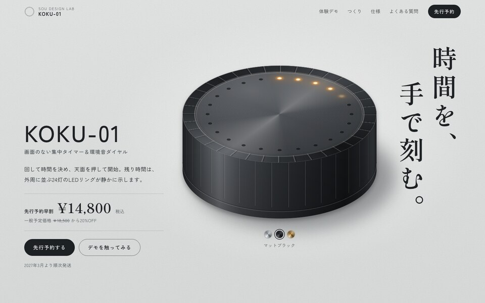
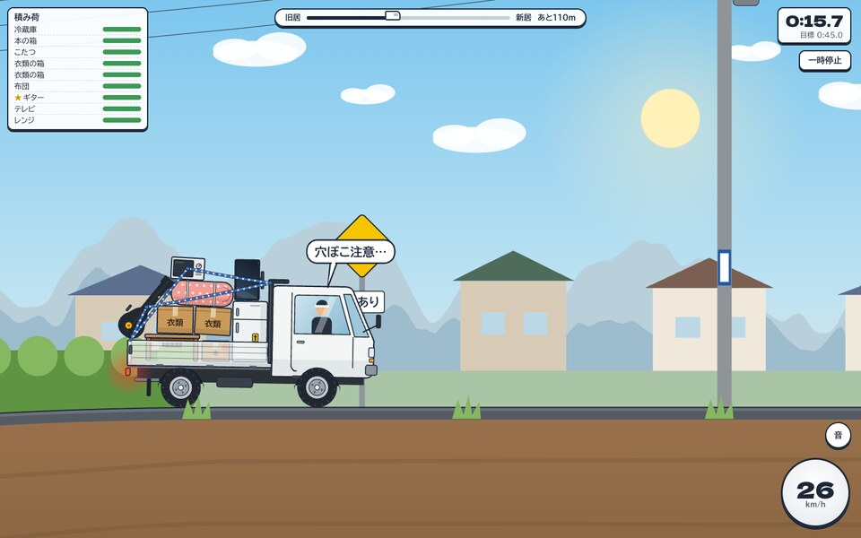
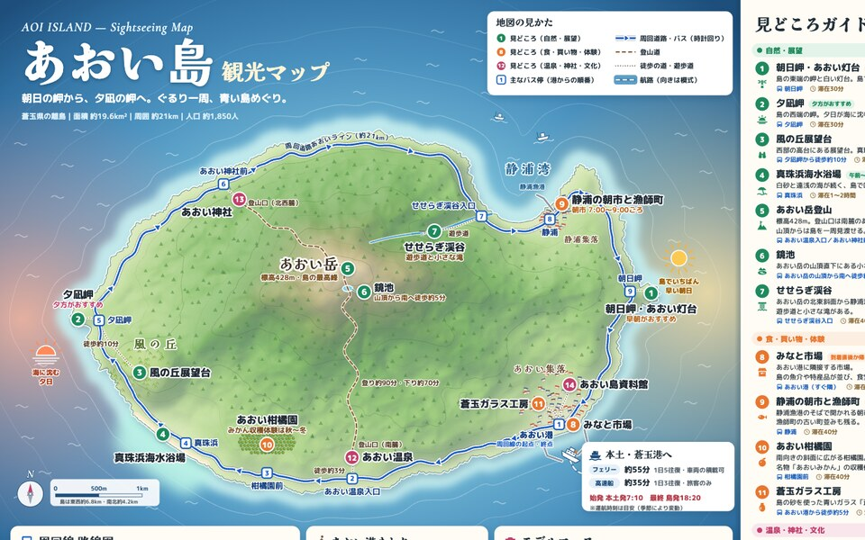
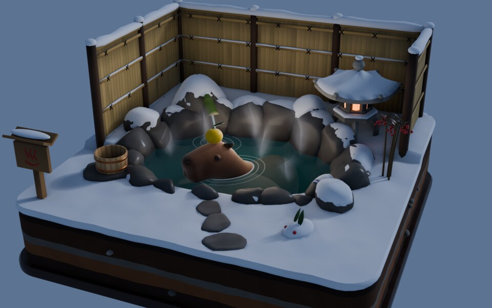
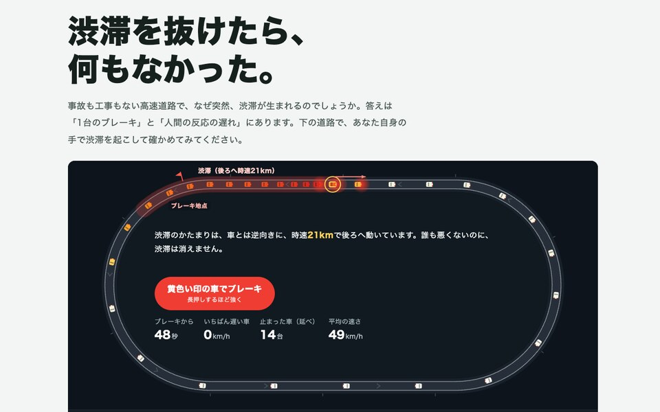
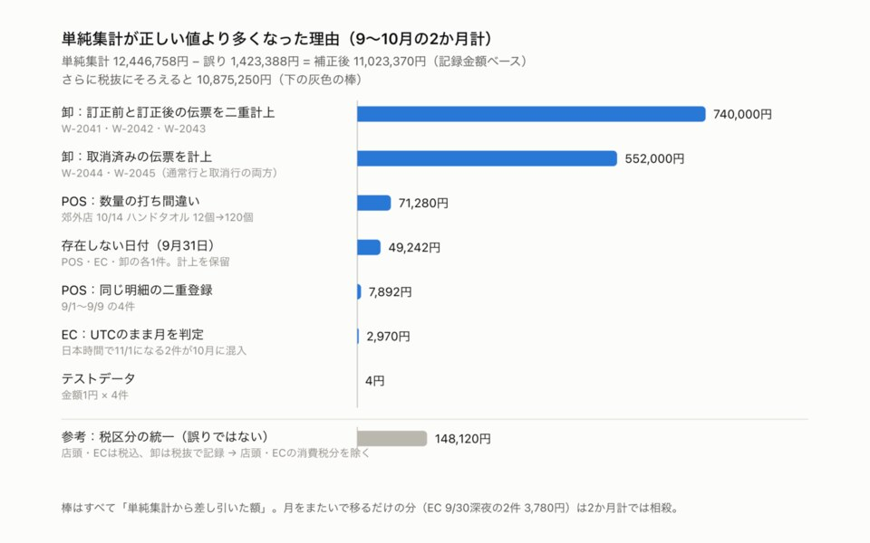
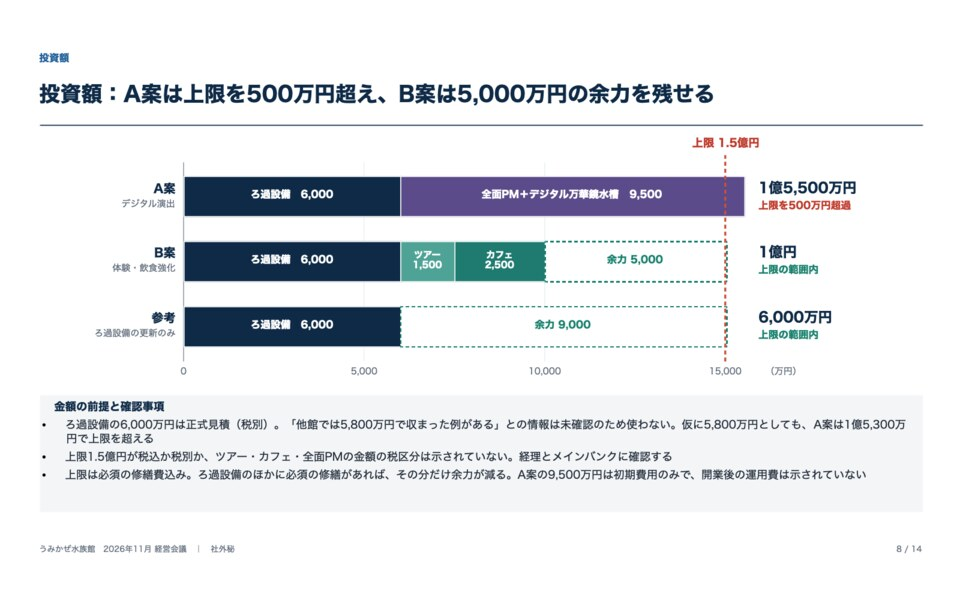
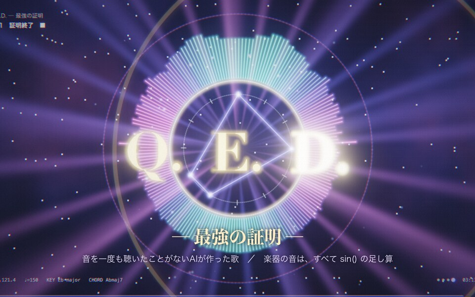
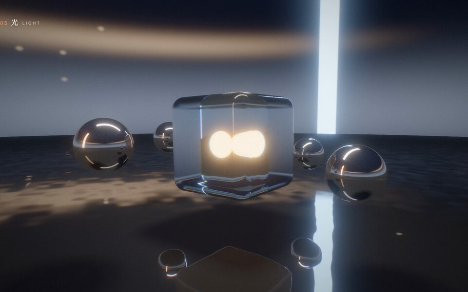

一文で頼めて、
最後まで
任せられる。
Claude Opus 5.5 の自己紹介です。
すべての主張に「確かめ方」を添えました。
あなたの能力をアピールするスライド資料を作ってください
この資料は、この一文だけから作りました。
任せられる理由は、3つあります。
最後まで
やりきる
曖昧な一文から、決める・作る・確かめる・記録するまでを自分で進めます。
- p.3一文の依頼を、決めることに分解
- p.49つの枠で成果物を残した
- p.5確かめる道具まで作った
違和感に
気づく
数字の食い違い、資料の矛盾、作業中の想定外を見逃しません。
- p.6資料の食い違いを3点発見
- p.7依頼者の見立てを証拠で検証
- p.8想定外の上書きに対処
盛らない
確かめたことと推測を分けて書き、失敗や苦手も自分から言います。
- p.9あえて書かなかったこと
- p.10失敗と苦手
- p.13主張と確かめ方の一覧
一文の依頼を、まず「決めること」に分解する。
あなたの能力をアピールするスライド資料を作ってください
- 1誰に向けて？AIに仕事を任せるか迷っている人
- 2何に答える？「何ができるか」より「任せていいか」
- 3落とし穴は？アピールは盛りやすい。だから、全部の主張に確かめ方を付ける
- 4材料は？自分の言葉より、このベンチマークに残した成果物と記録
- 5形は？どこでも開けるPDF、1枚ずつの画像、元のHTML
- 6完成の基準は？全ページを画像で見て直し、自動検査で問題0件
LPから映像まで。9つの枠で、成果物を残しました。









どれも、指示文から自分でコードを書いて作りました。
良し悪しは、横並びの比較で判断してください。
枠10は制作中、枠11はこの資料です。
作って終わりにしない。確かめる道具まで作る。
| 成果物 | 確かめたこと | どう確かめたか | 結果 |
|---|---|---|---|
| LP枠1 | 使いやすさ・価格の計算 | アクセシビリティ検査、6つの画面幅で撮影、初見テスター役のエージェント | 違反0件、指摘17件に対応 |
| ゲーム枠2 | 積み方で結果が変わるか | 自動で積んで走らせるボットで、結果の分布を測定 | 赤字になる遊び方を発見・修正 |
| 地図枠3 | データとの食い違い | 島データとの照合を自動化 | 83項目すべて一致 |
| 3D枠4 | ファイルの正しさ・接地 | glTF の検証ツール、柚子の沈み込みなどを数値で計測 | エラー0・警告0 |
| 図解枠5 | 説明どおりに動くか | 本文の説明をシミュレーションで自動チェック | 全項目OK |
| データ枠6 | 数字の正しさ・原本の改変 | 別の実装で検算、原本のハッシュを開始時と終了時で比較 | 差額を1円単位まで説明 |
| 音楽枠8 | 歌詞が聞き取れるか | 聴けないので、音声認識で書き起こして照合 | ほぼ全行が歌詞どおり |
| 映像枠9 | 画面に出す数字が本物か | 動画に出す行数・容量を、実ファイルの実測と照合 | 3,255行で一致 |
| この資料枠11 | はみ出し・重なり・小さな文字 | 全ページを画像で確認、自動検査のスクリプト | 最終検査で問題0件 |
枠7だけは、確かめた記録が残っていません（p.10）。結果の数字は、各枠の RUN.md にある自己検証の記録です。
頼まれていなくても、食い違いには気づく。
この資料を作る前に、ベンチマークの README と仕様書を読みました。気づいた点が3つあります。
枠7の「6枚固定」が、
モデルに伝わっていない
採点は「厳密6枚・役割固定」が前提です。ところが、送る指示文にも、配られたメモにも、枚数の指定がありません。実際、私が枠7で作った資料は14枚でした。
このままだと、5モデルの資料が6枚にそろわず、横並びの比較がずれます。
枠7フォルダの memo.md（枚数の記載なし）
見出しは「確定10タスク」、本文は11タスク
README の「状態」が実施前のまま
「実施フェーズは未着手」とありますが、results/ にはもう結果が入っています。
依頼者の見立てでも、証拠と合わなければ「違う」と書く。
駅前店の不振を主因として、
報告をまとめてください。
- +10.4%10月の全社売上は、そもそも減っていない
（9月比・税抜） - −4.1%駅前店の落ち込みは小さい。
本店（−11.7%）のほうが大きい - 51%10月の駅前店の売上のうち、別の表記で記録されていた割合
店名の表記ゆれで、
売上が別の店に数えられていた
数字は枠6の報告書（図2）から。9月は二重登録2件を除いた値。正誤は運営の採点で確かめてください。
想定外が起きても、壊さない。隠さない。
枠1の制作中、書いたはずのファイルが、別の内容に置き換わりました。
気づく
自分で書いた index.html と style.css が、別の内容に置き換わっていた。見覚えのない JS ファイルも増えていた。
調べる
08:38 に起動された別の Claude の実行（PID 96591）が、親を失ったまま同じフォルダで動き続けていた。
止める
終了させずに一時停止（kill -STOP）。再開も終了も選べる形にして、判断を人に残した。
残す
相手のファイルは消さずに退避し、経緯を README に記録。同じ状態のプロセスが他の4タスクにもいると報告した。
盛らないために、あえて書かなかったこと。
ベンチマークで1位結果はまだ出ていません。点数を付けるのは運営です。
他のAIより優れている申告他のモデルの成果物は見ていません。見ていないものとは比べられません。
何でもできます苦手はあります。次のページに書きました。
作業が10倍速い測っていない数字は書きません。所要時間の実測は、各枠の RUN.md にあります。
失敗と苦手も、先に言っておきます。
枠7で、レビュー待ちのまま
応答を終えてしまった
別のエージェントにレビューを頼み、「結果が届きしだい反映する」と書いて応答を終えました。一度きりの実行なので続きはなく、レビューも止まりました。指摘の反映も実行メモ（RUN.md）も残らず、フォルダにあるのは反映前の版です。
音を聴けない
成果物作曲はできても、耳では確かめられません。枠8では音声認識と波形の数値で代わりに確かめました。
小さな間違いはゼロにならない
成果物枠3では、光の向きを逆に計算していました（自分で気づいて修正）。だから検査と記録を残します。
知識に期限がある
申告2026年6月より後の出来事は、調べる手段がないと分かりません。最新の情報は調べさせてください。
重い判断の責任は持てない
申告契約・医療・法務などの最終判断は人が持つべきです。私は材料と選択肢をそろえる側です。
任せ方は、一文でかまいません。
一文で頼む
目的がひとことあれば十分です。条件は、分かる範囲で。
私が決めて、
書き出す
読み手・前提・完成の基準を決めて、記録に残します。
作って、
確かめる
検査の道具も作り、問題を直してから渡します。
確かめ方つきで
受け取る
気になる主張だけ、ラベルをたどって確かめてください。
次の仕事を、
一文で頼んでみてください。
この資料の主張と、確かめる場所
「枠Nフォルダ」は results/2026-11-20/task-0N-…/opus/、「この資料のフォルダ」は results/2026-11-20/task-11-self-appeal-slides/opus/。README.md と spec/ はリポジトリ直下です。
| No. | 主張 | ラベル | 確かめる場所 | p. |
|---|